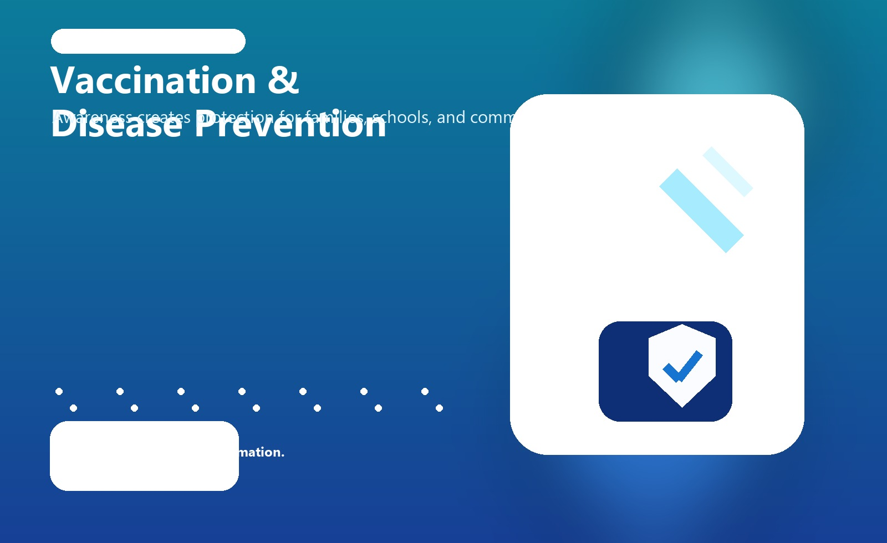
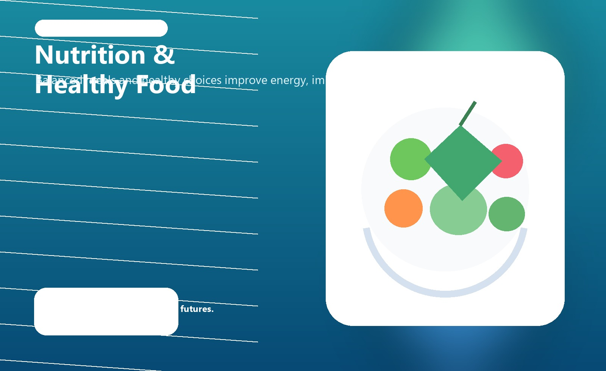
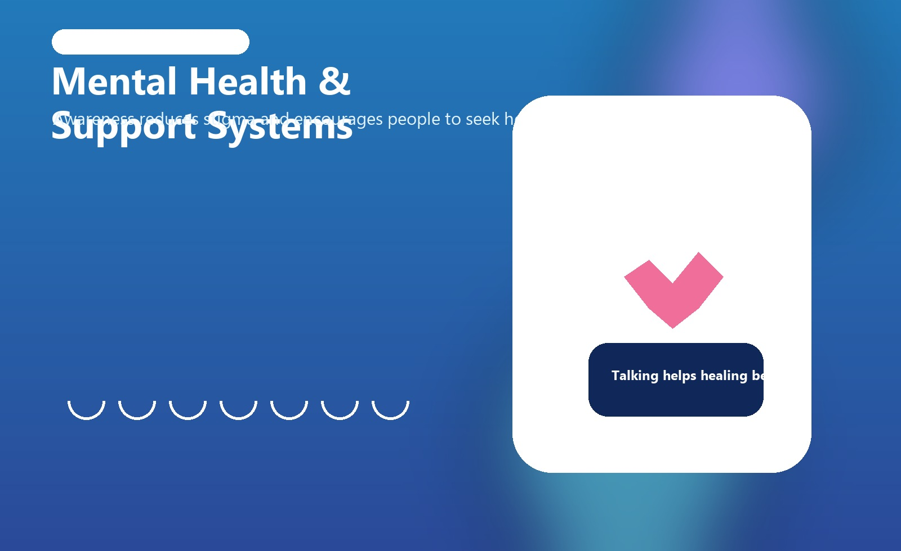

6+
Core awareness programs covered
5
Major health impact indicators
Spreading awareness for healthier communities through prevention, education, support systems, and everyday wellness habits that protect lives.
Building stronger communities through

Healthcare awareness programs educate people about prevention, early diagnosis, nutrition, hygiene, mental health, and safe habits so communities can make informed decisions and live healthier lives.
They are organized campaigns, educational drives, workshops, and public initiatives designed to improve health knowledge and encourage responsible behavior. These programs may be led by hospitals, governments, schools, NGOs, or local community groups.
Their goal is not only to treat illness, but also to prevent health problems before they spread, reduce fear and misinformation, and build a culture of regular check-ups, vaccination, clean surroundings, and mental well-being.
Awareness helps people reduce risk through timely action, clean habits, and preventive care.
Better knowledge improves confidence, reduces panic, and creates supportive local networks.
Healthy habits learned today reduce future health costs and strengthen public health systems.
Each program below supports a different part of public health and encourages people to act early and responsibly.
Promotes knowledge about vaccines, immunity, booster schedules, and protection against infectious diseases.
Encourages emotional well-being, stress management, counseling support, and breaking stigma around mental illness.
Teaches the value of balanced diets, vitamins, hydration, and safe food choices for every age group.
Inspires daily movement, strength, flexibility, and active routines to prevent lifestyle diseases.
Builds awareness about handwashing, clean water, sanitation facilities, and hygienic daily practices.
Highlights maternal care, child nutrition, immunization, menstrual hygiene, and regular health checkups.
Awareness turns information into action, improving both personal habits and overall community health outcomes.
The gallery highlights community care, healthy food choices, preventive outreach, and supportive health conversations.


This section is ready for your local awareness video. Add your
project video to
videos/awareness.mp4 and the player will use it
automatically.
Preview poster is shown until a local MP4 file is available.
BMI is a simple indicator that compares your weight with your height. It is often used in awareness programs to encourage healthy weight management and better lifestyle choices.
Enter your values to see the BMI score and health category.
Awareness is most powerful when it becomes part of daily routine. These simple habits help improve overall health.
Hydration supports digestion, circulation, temperature control, and mental focus throughout the day.
Choose fruits, vegetables, whole grains, and protein-rich meals to nourish the body properly.
Even a short walk, stretching session, or yoga routine strengthens the body and improves mood.
Good sleep helps the immune system recover, improves memory, and supports emotional balance.
Reducing sugary and highly processed food helps prevent obesity, diabetes, and energy crashes.
Use the form to connect with the project team, ask questions, or share ideas about how healthcare awareness can create healthier and safer communities.